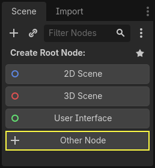
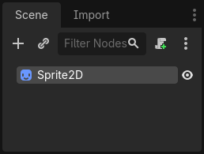
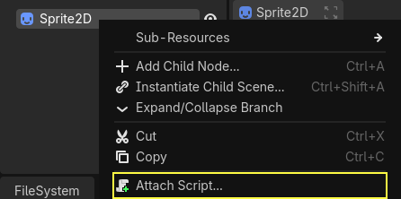
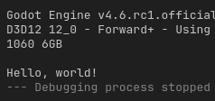

Tạo script đầu tiên
Trong bài học này, bạn sẽ viết script đầu tiên để khiến biểu tượng Godot xoay vòng tròn. Như đã đề cập trong phần giới thiệu, chúng tôi giả định bạn đã có nền tảng lập trình.
Bài hướng dẫn này được viết cho GDScript, và code C# tương đương được đặt trong một tab khác của mỗi khối code để tiện cho bạn.

Xem thêm
Để tìm hiểu thêm về GDScript, các từ khóa và cú pháp của nó, hãy đến phần GDScript. Để tìm hiểu thêm về C#, hãy đến phần C#/.NET.
Thiết lập dự án
Hãy tạo một dự án mới để bắt đầu từ đầu. Dự án của bạn sẽ chứa một hình ảnh: biểu tượng Godot, thứ mà cộng đồng thường dùng để làm prototype.
Chúng ta cần tạo một node Sprite2D để hiển thị nó trong game. Trong dock Scene, nhấp nút .

Gõ "Sprite2D" vào thanh tìm kiếm để lọc node và nhấp đúp vào Sprite2D để tạo node.
Tab Scene của bạn giờ chỉ nên có một node Sprite2D.

Node Sprite2D cần một texture để hiển thị. Trong Inspector ở bên phải, bạn có thể thấy thuộc tính Texture đang ghi <empty>. Để hiển thị biểu tượng Godot, hãy nhấp và kéo tệp icon.svg từ dock FileSystem vào ô Texture.

Ghi chú
Bạn có thể tạo node Sprite2D tự động bằng cách kéo thả hình ảnh vào viewport.
Sau đó, nhấp và kéo biểu tượng trong viewport để căn nó vào giữa khung nhìn game.
Tạo script mới
Để tạo và gắn một script mới vào node, nhấp chuột phải vào Sprite2D trong dock Scene và chọn .

Cửa sổ Attach Node Script xuất hiện. Nó cho phép bạn chọn ngôn ngữ và đường dẫn tệp của script, cùng các tùy chọn khác.
Đổi trường Template từ Node: Default sang Object: Empty để bắt đầu với một tệp trống. Giữ các tùy chọn khác ở giá trị mặc định và nhấp nút để tạo script.

Ghi chú
Tên script C# cần khớp với tên lớp của nó. Trong trường hợp này, bạn nên đặt tên file là MySprite2D.cs.
Workspace Script sẽ xuất hiện với tệp sprite_2d.gd mới của bạn đang mở và dòng code sau:
extends Sprite2D
using Godot;
using System;
public partial class MySprite2D : Sprite2D
{
}
Mỗi file GDScript đều ngầm định là một lớp. Từ khóa extends xác định lớp mà script này kế thừa hoặc mở rộng. Trong trường hợp này là Sprite2D, nghĩa là script của chúng ta sẽ truy cập được tất cả thuộc tính và hàm của node Sprite2D, bao gồm cả các lớp mà nó mở rộng, như Node2D, CanvasItem và Node.
Ghi chú
Trong GDScript, nếu bạn bỏ dòng có từ khóa extends, lớp của bạn sẽ ngầm định mở rộng RefCounted, lớp mà Godot dùng để quản lý bộ nhớ của ứng dụng.
Các thuộc tính được kế thừa bao gồm những thuộc tính bạn thấy trong dock Inspector, như texture của node.
Ghi chú
Theo mặc định, Inspector hiển thị thuộc tính của node theo kiểu "Title Case", với các từ viết hoa chữ cái đầu và cách nhau bằng dấu cách. Trong code GDScript, các thuộc tính này ở dạng "snake_case", tức là chữ thường với mỗi từ cách nhau bằng dấu gạch dưới.
Bạn có thể rê chuột lên tên bất kỳ thuộc tính nào trong Inspector để xem mô tả và định danh của nó trong code.
Hello, world!
Hiện tại script của chúng ta chưa làm gì cả. Để bắt đầu, hãy cho nó in dòng chữ "Hello, world!" ra bảng Output ở phía dưới.
Thêm đoạn code sau vào script của bạn:
func _init():
print("Hello, world!")
public MySprite2D()
{
GD.Print("Hello, world!");
}
Hãy phân tích nó. Từ khóa func định nghĩa một hàm mới tên là _init. Đây là tên đặc biệt cho hàm khởi tạo (constructor) của lớp. Nếu bạn định nghĩa hàm này, engine sẽ gọi _init() trên mọi đối tượng hoặc node khi tạo nó trong bộ nhớ.
Ghi chú
GDScript là ngôn ngữ dựa trên thụt lề. Ký tự tab ở đầu dòng print() là bắt buộc để code hoạt động. Nếu bạn bỏ nó hoặc thụt lề một dòng không đúng, trình chỉnh sửa sẽ tô đỏ dòng đó và hiển thị thông báo lỗi sau: "Indented block expected".
Lưu scene với tên sprite_2d.tscn nếu bạn chưa lưu, rồi nhấn F6 (Cmd + R trên macOS) để chạy nó. Hãy nhìn vào bảng Output ở dưới cùng đang mở rộng. Nó sẽ hiển thị "Hello, world!".

Xóa hàm _init(), để chỉ còn lại dòng extends Sprite2D.
Xoay vòng
Đã đến lúc làm cho node di chuyển và xoay. Để làm vậy, chúng ta sẽ thêm hai biến thành viên vào script: tốc độ di chuyển tính bằng pixel mỗi giây và tốc độ góc tính bằng radian mỗi giây. Hãy thêm đoạn sau vào sau dòng extends Sprite2D.
var speed = 400
var angular_speed = PI
private int _speed = 400;
private float _angularSpeed = Mathf.Pi;
Các biến thành viên nằm gần đầu script, sau các dòng "extends" nhưng trước các hàm. Mỗi instance node có gắn script này sẽ có bản sao riêng của các thuộc tính speed và angular_speed.
Ghi chú
Góc trong Godot mặc định tính bằng radian, nhưng bạn có sẵn các hàm và thuộc tính tích hợp nếu muốn tính góc theo độ.
Để di chuyển biểu tượng, chúng ta cần cập nhật vị trí và góc xoay của nó mỗi frame trong vòng lặp game. Chúng ta có thể dùng hàm ảo _process() của lớp Node. Nếu bạn định nghĩa nó trong bất kỳ lớp nào mở rộng lớp Node, như Sprite2D, Godot sẽ gọi hàm này mỗi frame và truyền cho nó một đối số tên là delta, tức thời gian trôi qua kể từ frame trước.
Ghi chú
Game hoạt động bằng cách kết xuất nhiều hình ảnh mỗi giây, mỗi hình gọi là một frame, và làm vậy trong một vòng lặp. Chúng ta đo tốc độ game tạo ra hình ảnh bằng số khung hình mỗi giây (FPS). Hầu hết game nhắm đến 60 FPS, mặc dù bạn có thể gặp con số như 30 FPS trên các thiết bị di động chậm hơn hoặc từ 90 đến 240 cho game thực tế ảo.
Engine và các nhà phát triển game cố gắng hết sức để cập nhật thế giới game và kết xuất hình ảnh theo khoảng thời gian cố định, nhưng luôn có những dao động nhỏ trong thời gian kết xuất frame. Đó là lý do engine cung cấp cho chúng ta giá trị thời gian delta này, giúp chuyển động không phụ thuộc vào tốc độ khung hình.
Ở cuối script, định nghĩa hàm:
func _process(delta):
rotation += angular_speed * delta
public override void _Process(double delta)
{
Rotation += _angularSpeed * (float)delta;
}
Từ khóa func định nghĩa một hàm mới. Sau đó, chúng ta phải viết tên hàm và các đối số mà nó nhận trong cặp ngoặc đơn. Dấu hai chấm kết thúc phần định nghĩa, và các khối thụt lề theo sau là nội dung hay các lệnh của hàm.
Ghi chú
Để ý rằng _process(), giống như _init(), bắt đầu bằng dấu gạch dưới. Theo quy ước, các hàm ảo của Godot, tức là các hàm tích hợp mà bạn có thể ghi đè để giao tiếp với engine, đều bắt đầu bằng dấu gạch dưới.
Dòng bên trong hàm, rotation += angular_speed * delta, tăng góc xoay của sprite mỗi frame. Ở đây, rotation là một thuộc tính kế thừa từ lớp Node2D, lớp mà Sprite2D mở rộng. Nó điều khiển góc xoay của node và làm việc với radian.
Mẹo
Trong trình soạn thảo code, bạn có thể Ctrl + Click (Cmd + Click trên macOS) vào bất kỳ thuộc tính hoặc hàm có sẵn nào như position, rotation hay _process để mở tài liệu tương ứng trong một tab mới.
Chạy scene để thấy biểu tượng Godot xoay tại chỗ.

Ghi chú
Trong C#, hãy để ý rằng đối số delta mà _Process() nhận vào có kiểu double. Vì vậy chúng ta cần chuyển nó sang float khi áp dụng vào góc xoay.
Tiến về phía trước
Giờ hãy làm cho node di chuyển. Thêm hai dòng sau vào bên trong hàm _process(), đảm bảo các dòng mới được thụt lề giống như dòng rotation += angular_speed * delta trước đó.
var velocity = Vector2.UP.rotated(rotation) * speed
position += velocity * delta
var velocity = Vector2.Up.Rotated(Rotation) * _speed;
Position += velocity * (float)delta;
Như chúng ta đã thấy, từ khóa var định nghĩa một biến mới. Nếu bạn đặt nó ở đầu script, nó định nghĩa một thuộc tính của lớp. Bên trong hàm, nó định nghĩa một biến cục bộ: biến này chỉ tồn tại trong phạm vi của hàm.
Chúng ta định nghĩa một biến cục bộ tên là velocity, một vector 2D biểu diễn cả hướng lẫn tốc độ. Để node tiến về phía trước, chúng ta bắt đầu từ hằng số Vector2.UP của lớp Vector2, một vector hướng lên trên, rồi xoay nó bằng cách gọi phương thức rotated() của Vector2. Biểu thức Vector2.UP.rotated(rotation) này là một vector hướng về phía trước so với biểu tượng. Nhân với thuộc tính speed, nó cho chúng ta một vận tốc có thể dùng để di chuyển node về phía trước.
Chúng ta cộng velocity * delta vào position của node để di chuyển nó. Bản thân position có kiểu Vector2, một kiểu tích hợp sẵn trong Godot biểu diễn vector 2D.
Chạy scene để thấy đầu Godot chạy vòng tròn.
Ghi chú
Di chuyển node theo cách đó không tính đến việc va chạm với tường hay sàn. Trong Game 2D đầu tiên của bạn, bạn sẽ học một cách khác để di chuyển đối tượng đồng thời phát hiện va chạm.
Hiện tại node của chúng ta tự di chuyển. Trong phần tiếp theo, Lắng nghe input của người chơi, chúng ta sẽ dùng input của người chơi để điều khiển nó.
Script hoàn chỉnh
Đây là file sprite_2d.gd hoàn chỉnh để bạn tham khảo.
extends Sprite2D
var speed = 400
var angular_speed = PI
func _process(delta):
rotation += angular_speed * delta
var velocity = Vector2.UP.rotated(rotation) * speed
position += velocity * delta
using Godot;
using System;
public partial class MySprite2D : Sprite2D
{
private int _speed = 400;
private float _angularSpeed = Mathf.Pi;
public override void _Process(double delta)
{
Rotation += _angularSpeed * (float)delta;
var velocity = Vector2.Up.Rotated(Rotation) * _speed;
Position += velocity * (float)delta;
}
}